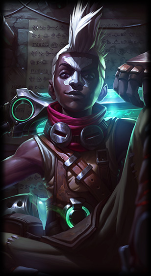
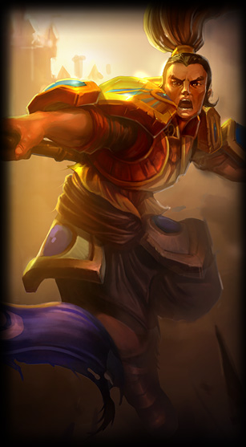
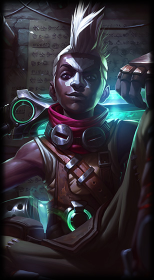
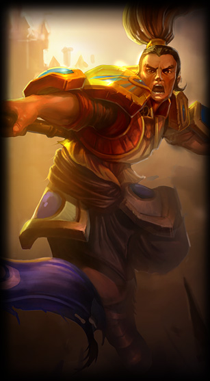

ProjectLOL
Der Jungler
Der Jungler spielt im Dschungel von der Karte. Er bewegt sich dort und Tötet die Monster und Buffs um Gold und Erfahrungspunkte zu sammeln. Er ist auch dazu da um auf den anderen Lanes zu helfen und Kills zu erziehlen. Eine andere Aufgabe von ihn ist es die großen Buffs wie den Drachen, Baron und den Rift Herald für das Team zu sichern. Im Jungle werden alle Arten von Champions gespielt, doch am besten ist es einen Jungler zu wählen der viel aushalten kann, dass ist dann besser für das Team.
- Ganking Jungler: Ganking Jungler zeichnen sich dadurch aus, dass sie sehr häufig den anderen Lanes helfen und ihnen wenn möglich eine Tötung zu ermöglichen. Am besten ist es für Ganking Jungler, wenn sie Massenkontrolleffekte haben, damit die Gegner nicht so leicht vor einem Gank entkommen können.
- Farming Jungler: Die Farming Jungler konzentrieren sich darauf sehr viel Gold und Erfahrungspunkte im Jungle zu sammeln. Es ist auch sehr vorteilhaft wenn sie auch den gegnerrischen Jungle benutzen, damit sie schneller an starke Items kommen können. Sie sind dann meistens in der Mitte des Spiels schon sehr stark und können ihr Team gut unterstützen.
- Kontroll Jungler: Die Aufgabe vom Kontroll Jungler ist es den gegnerrischen Jungle zu kontrollieren und ihn aus dem Spiel zu nehmen. Er konzentriert sich weniger auf das Farmen und Ganken im Jungle, sondern eher auf die Objektkontrolle. Es ist auch wichtig das er die Buffs wie Drake oder Baron kontrolliert.
- Farmen
- Ganken
- Den gegnerischen Jungler aus dem Spiel nehmen
- Objekte und Buffs Kontrollieren
- Das Team jederzeit unterstützen
Drei Arten von Junglern:
Die Aufgaben eins Junglers
Die drei stärksten Jungler
 


